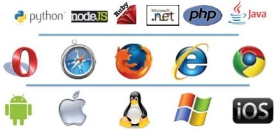

Selenium?
-
Suite of tools to automates web browsers.
-

- And its freeee!!!
Selenium suite
-
Selenium IDE - FF addon for record and playback.
-
Webdriver - Simple interface to interact with browsers
-
Grid - To run tests on different machines against different browsers in parallel.
Locating element
- By id :
id=id_of_element
- By Name :
name=name_of_the_element
- By Link text :
link=link_text
- By CSS selector :
css=tag#id
- By DOM :
document.getElementById("some_id")
- By Xpath :
//Xpath/expression
But how to get values?
- Firebug
- Firepath
- FireFinder
- IE Developer Tool
Webdriver
-
Webdriver to control browser
WebDriver browser = new FirefoxDriver();
-
WebElement to work with element on page
WebElement element = browser.findElement(By.id("some_id"));
Locating elements
By.id("IdOfElement");By.name("NameOfElement");By.className("CSSClassOfTheElement");By.linkText("TextUsedInLink");By.partialLinkText("partOfTheLink");By.tagName("HTMLElementType");By.cssSelector("cssSelector");By.xpath("//Xpath/to/the/element");
Lets do some action!!!
click();clear();sendKeys();submit();
Beyond Hello World...
- Executing JavaScript
- Handling windows / alerts
- Fighting frames
- Mouse actions
- Handling dynamic sites
- Handling OS objects
Questions ?
If you are still waiting for this.
Bravo, you made it till the end..
Thanks!!!